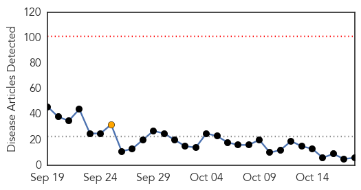
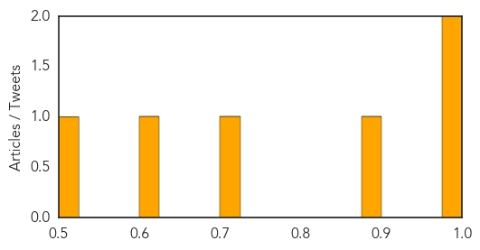

Ebola
30-Day Web Trend
3 alerts, 0 warnings

30-Day Twitter Trend
2 alerts, 0 warnings

Article Locations

Article Confidences

Top Articles:
- 1.000
- UK Ebola Nurse 'Critically Ill' as Her Condition Worsens, Says London Hospital
- 0.999
- Ebola outbreak may enter third year after new cases discovered in Guinea
- 0.999
- UK Ebola Nurse ‘Critically Ill’ as Her Condition Worsens, Says London Hospital
- 0.999
- Ebola survivors can harbour virus in semen for at least 9 months
- 0.999
- So It Turns Out There's A Lot We Don't Know About Ebola
- 0.998
- Ebola lingers in men
- 0.998
- UK Ebola Nurse 'Critically Ill' as Her Condition Worsens, Says London Hospital
- 0.997
- Condition of hospitalized Ebola nurse in United Kingdom worsens
- 0.997
- Schools Turn Away Students from West...
- 0.996
- UK nurse with 're-activated Ebola' critically ill
- 0.995
- Condition of put in the hospital Ebola nurse in Uk gets worse
- 0.993
- 'Ebola nurse' Pauline Cafferkey critically ill
- 0.934
- Sexual transmission of Ebola virus in Liberia confirmed using genomic analysis
- 0.933
- China to mass produce Ebola vaccine
- 0.928
- Zambia National Broadcasting Corporation
- 0.827
- Ebola: Laboratory test of suspected patient proves negative, says FG
- 0.525
- BRAC’s intervention in the Ebola fight is lauded
Top Tweets:
- 0.817
- Ebola outbreak may enter third year after new cases in Guinea - Citizen TV (press release) http://t.co/cLqLRHC2lL ebola EVD
- 0.613
- Ebola: FG says deceased student free from pathogenic viruses - Naija247news http://t.co/qLf0MdqXFM ebola EVD
- 0.577
- Ebola has almost gone but life is still desperate in Sierra Leone - The Guardian http://t.co/GUoxMImNlY ebola EVD
- 0.555
- Scientists Now Reporting “Post-Ebola Syndrome” - legal Insurrection (blog) http://t.co/dE675bj2Fv ebola EVD
Dengue Fever
30-Day Web Trend
0 alerts, 1 warnings

30-Day Twitter Trend
2 alerts, 0 warnings

Article Locations

Article Confidences
Top Articles:
Top Tweets:
-
No tweets found for Oct 18, 2015